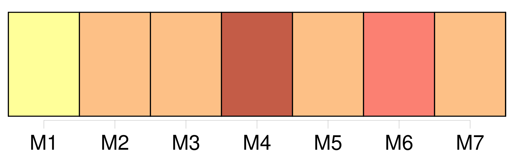

Longueur nb maillons : 530 mentions |
  |
Quant à [la personne] [qu'] escortaient ces deux laquais, [elle] descendit lentement sur le pavé humide et froid, secoua [sa] pelisse doublée de martre, et prit le chemin de la cuisine sans proférer une seule parole. [C'] était [une jeune femme d'une beauté vive et saisissante, mais pâlie par la fatigue] [Elle] refusa l'offre d'une chambre, et, tandis que [ses] valets préféraient s'enfermer et dormir dans la berline, [elle] s'assit devant le foyer, sur la chaise classique, ingrat et revêche asile du voyageur résigné. [1 phrases] Le chat, qui s'était dérangé avec humeur pour faire place à [la voyageuse] , se blottit de nouveau sur les cendres tièdes. Pendant quelques instants, il fixa sur [elle] des yeux verts et luisants pleins de dépit et de méfiance ; mais peu à peu sa prunelle se resserra et s'amoindrit jusqu'à n'être plus qu'une mince raie noire sur un fond d'émeraude. [1 phrases] [La voyageuse] essaya vainement de s'assoupir. Mille images confuses passaient dans [ses] rêves et [la] réveillaient en sursaut.
Tous ces souvenirs puérils qui obsèdent parfois les imaginations actives se pressèrent dans [son] cerveau et s'évertuèrent à le fatiguer sans but et sans fruit, jusqu'à ce qu'enfin une pensée dominante s'établît à leur place. — Oui, c'était une triste ville, pensa [la voyageuse] , une ville aux rues anguleuses et sombres, au pavé raboteux ; une ville laide et pauvre, comme celle -ci [m'] est apparue à travers la vapeur qui couvrait les glaces de [ma] voiture. [2 phrases] C'était affreux, cette pauvre ville, et pourtant [j'] y ai passé des années de jeunesse et de force!! [J'] étais bien autre alors …… [J'] étais pauvre de condition, mais [j'] étais riche d'énergie et d'espoir. [Je] souffrais bien!! [ma] vie se consumait dans l'ombre et dans l'inaction ; mais qui [me] rendra ces souffrances d'une âme agitée par sa propre puissance?? [2 phrases]
… [2 phrases]
[L'étrangère] était donc entrée sans rien distinguer autour d' [elle] , et l'état de demi-sommeil où [elle] était, [l'] avait, d'ailleurs, empêchée de faire aucune remarque sur le lieu où [elle] se trouvait. [1 phrases] Les yeux distraits de [la voyageuse] , suivant machinalement ces ondulations de lumière, s'arrêtèrent tout à coup sur une inscription qui ressortait en blanc sur un des chambranles noircis de la cheminée.
[Elle] tressaillit alors, passa la main sur [ses] yeux appesantis, ramassa un bout de branche embrasée pour examiner les caractères, et le laissa retomber en s'écriant d'une voix émue : [1 phrases] où suis [-je] ??
est -ce un rêve que [je] fais?
À cette exclamation, la servante s'éveilla brusquement, et, se tournant vers [elle] , [lui] demanda si [elle] l'avait appelée. — Oui, oui, s'écria [l'étrangère] ; venez ici.
Dites [-moi] , qui a écrit ces deux noms sur le mur? [3 phrases] dit [l'étrangère] en se parlant avec une sorte d'exaltation, son nom et le mien, Pauline, Laurence!! [3 phrases]
dites [-moi] , dites [-moi] pourquoi ces noms et cette date sont ici?
— [Madame] , répondit [la servante] , je n'y avais jamais fait attention, et, d'ailleurs, je ne sais pas lire. — Mais où suis [-je] donc?? comment nommez [-vous] cette ville?? [1 phrases]
? [2 phrases]
s'écria [la voyageuse] avec force en se levant tout à coup.
La servante épouvantée [la] crut folle et voulut s'enfuir ; mais [la jeune femme] , l'arrêtant : par grâce, restez, dit [-elle] , et parlez [-moi] !! Comment se fait -il que [je] sois ici?? Dites [-moi] si [je] rêve??
Si [je] rêve, éveillez [-moi] ? — Mais, [madame] , [vous] ne rêvez pas, ni moi non plus, je pense, répondit la servante. [Vous] vouliez donc aller à Lyon?? [1 phrases] mon Dieu, [vous] aurez oublié de l'expliquer au postillon, et, tout naturellement, il aura cru que [vous] alliez à Paris. [1 phrases]
— Mais [je] lui ai dit moi -même que [j'] allais à Lyon. [1 phrases] [dame] !! [2 phrases] répétait [l'étrangère] [1 phrases] singulière destinée qui [me] ramène aux lieux que [je] voulais fuir!! [J'] ai fait un détour pour ne point passer ici, et, parce que [je] me suis endormie deux heures, le hasard [m'] y conduit à [mon] insu!! [2 phrases] Sachons ce que [je] dois retrouver ici de joie ou de douleur. Dites [-moi] , [ma] chère, ajouta-t [-elle] en s'adressant à la fille d'auberge, connaissez -vous dans cette ville mademoiselle Pauline D ……
? — Mais allez [me] chercher une autre servante, quelqu'un?? [je] veux le savoir. Puisque [je] suis ici, [je] veux tout savoir. [4 phrases] Une prompte libéralité de la jeune dame la décida à aller réveiller le chef, et, après un quart d'heure d'attente, qui parut mortellement long à [notre voyageuse] , on vint enfin [lui] apprendre que mademoiselle Pauline D …… [1 phrases]
Aussitôt [l'étrangère] ordonna qu'on mît [sa] voiture sous la remise et qu'on [lui] préparât une chambre. [Elle] se mit au lit en attendant le jour, mais [elle] ne put dormir. [Ses] souvenirs, assoupis ou combattus longtemps, reprenaient alors toute leur puissance ; [elle] reconnaissait toutes les choses qui frappaient [sa] vue dans l'auberge du Lion-Couronné. [3 phrases] se disait [la voyageuse] , [j'] ai habité plusieurs jours cette même chambre, il y a douze ans, lorsque [je] suis arrivée ici avec [ma] bonne mère!! C'est dans cette triste ville que [je] l'ai vue dépérir de misère et que [j'] ai failli la perdre. [J'] ai couché dans ce même lit la nuit de [mon] départ!! [1 phrases] Comme elle pleurait, [ma] pauvre amie, ma douce Pauline, en [m'] embrassant sous cette cheminée où [je] sommeillais tout à l'heure sans savoir où [j'] étais!! Comme [je] pleurais, moi aussi, en écrivant sur le mur son nom au-dessous du mien, avec la date de notre séparation!! [5 phrases] Et pourtant [je] voulais la fuir, [je] m'étais promis de ne la revoir jamais!! — [Je] vais peut-être lui apporter un peu de consolation, mettre un jour de bonheur dans sa triste vie!! — Si elle [me] repoussait pourtant!! [2 phrases] cela est évident, ajouta tristement [la voyageuse] ; comment puis [-je] en douter?? N'a-t -elle pas cessé tout à coup de [m'] écrire en apprenant le parti que [j'] avais pris?? [3 phrases] elle [m'] aimait tant, et elle aurait rougi de [moi] !! … [je] ne sais plus que penser …… À présent que [je] me sens si près d'elle, à présent que [je] suis sûre de la retrouver dans la situation où [je] l'ai connue, [je] ne peux plus résister au désir de la voir. [1 phrases] [je] la verrai, dût -elle [me] repousser!! [1 phrases]
[J'] aurai vaincu les justes défiances de [mon] orgueil, [j'] aurai été fidèle à la religion du passé ; c'est elle qui se sera parjurée! Au milieu de ces agitations, [elle] vit monter le matin gris et froid derrière les toits inégaux des maisons déjetées qui s'accoudaient disgracieusement les unes aux autres. [Elle] reconnut le clocher qui sonnait jadis [ses] heures de repos ou de rêverie ; [elle] vit s'éveiller les bourgeois en classique bonnet de coton ; et de vieilles figures dont [elle] avait un confus souvenir, apparurent toutes refrognées aux fenêtres de la rue. [Elle] entendit l'enclume du forgeron retentir sous les murs d'une maison décrépite ; [elle] vit arriver au marché les fermiers en manteau bleu et en coiffe de toile cirée ; tout reprenait sa place et conservait son allure comme aux jours du passé.
Chacune de ces circonstances insignifiantes faisait battre le cœur de [la voyageuse] , quoique tout [lui] semblât horriblement laid et pauvre. [1 phrases] disait [-elle] , [j'] ai pu vivre ici quatre ans entiers sans mourir!! [j'] ai respiré cet air, [j'] ai parlé à ces gens -là, [j'] ai dormi sous ces toits couverts de mousse, [j'] ai marché dans ces rues impraticables!!
et Pauline, ma pauvre Pauline vit encore au milieu de tout cela, elle qui était si belle, si aimable, si instruite, elle qui aurait régné et brillé comme [moi] sur un monde de luxe et d'éclat!
Aussitôt que l'horloge de la ville eut sonné sept heures, [elle] acheva [sa] toilette à la hâte ; et, laissant [ses] domestiques maudire l'auberge et souffrir les incommodités du déplacement avec cette impatience et cette hauteur qui caractérisent les laquais de bonne maison, [elle] s'enfonça dans une des rues tortueuses qui s'ouvraient devant [elle] , marchant sur la pointe du pied avec l'adresse d'une Parisienne, et faisant ouvrir de gros yeux à tous les bourgeois de la ville, pour qui une figure nouvelle était un grave événement. [2 phrases]
Tout y avait l'air sombre et chagrin, depuis la figure de cuivre ciselée sur le marteau de la porte, jusqu'à celle de la vieille servante non moins laide et rechignée qui vint ouvrir, toisa [l'étrangère] avec dédain, et [lui] tourna le dos après [lui] avoir répondu sèchement : [La voyageuse] éprouva une émotion à la fois douce et déchirante en montant l'escalier en vis auquel une corde luisante servait de rampe.
Cette maison [lui] rappelait les plus fraîches années de sa vie, les pures scènes de [sa] jeunesse ; mais, en comparant ces témoins de [son] passé au luxe de [son] existence présente, [elle] ne pouvait s'empêcher de plaindre Pauline, condamnée à végéter là comme la mousse verdâtre qui se traînait sur les murs humides. [Elle] monta sans bruit et poussa la porte qui roula sur ses gonds en silence. [1 phrases] Le carreau de briques rougeâtres bien lavées, les boiseries brunes soigneusement dégagées de poussière, la glace dont le cadre avait été doré jadis, les meubles massifs brodés au petit point par quelque aïeule de la famille, et deux ou trois tableaux de dévotion légués par l'oncle, curé de la ville, tout était précisément resté à la même place et dans le même état de vétusté robuste depuis dix ans, dix ans pendant lesquels [l'étrangère] avait vécu des siècles!!
Aussi tout ce qu' [elle] voyait [la] frappait comme un rêve. [3 phrases] Elle était bien changée, et, comme [la voyageuse] ne pouvait voir son visage, [elle] douta longtemps que ce fût elle. [Elle] avait laissé Pauline plus petite de toute la tête, et maintenant Pauline était grande et d'une ténuité si excessive, qu'on eût dit qu'elle allait se briser en changeant d'attitude. [3 phrases] Quand [la voyageuse] eut fait quelques pas, [elle] distingua, dans la clarté de la fenêtre, les lignes brillantes du beau profil de Pauline : ses traits réguliers et calmes, ses grands yeux voilés et nonchalants, son front pur et uni, plutôt découvert qu'élevé, sa bouche délicate, qui semblait incapable de sourire. [1 phrases]
Dans le premier instant, [son ancienne amie] fut tentée de la plaindre ; mais, en admirant la sérénité profonde de ce front mélancolique doucement penché sur son ouvrage, [elle] se sentit pénétrée de respect bien plus que de pitié.
[Elle] resta donc immobile et muette à la regarder ; mais, comme si [sa] présence se fût révélée à Pauline par un mouvement instinctif du cœur, celle -ci se tourna tout à coup vers [elle] et [la] regarda fixement sans dire un mot et sans changer de visage. [1 phrases] ne [me] reconnais -tu pas??
s'écria [l'étrangère] ; as -tu oublié la figure de [Laurence] ? [1 phrases]
[Laurence] était déjà dans ses bras, et toutes deux pleuraient. — Tu ne [me] reconnaissais pas??
dit enfin [Laurence] [1 phrases] que dis [-tu] là?? [1 phrases] Je [te] reconnaissais bien, mais je n'étais pas étonnée. [Tu] ne sais pas une chose, [Laurence] ?? [1 phrases] Comment [te] dirai -je?? [3 phrases] Va, bien souvent je [t'] ai vue là devant cette porte, debout comme [tu] étais tout à l'heure, et me regardant d'un air indécis. [1 phrases] Je n'ai été surprise que quand je [t'] ai entendue parler. [1 phrases] alors, [ta] voix m'a réveillée!! [1 phrases] [Chère Laurence] !! [c'] est donc [toi] vraiment??
[dis] -moi bien que [c'] est [toi] !
Quand [Laurence] eut timidement exprimé à [son] amie la crainte qui [l'] avait empêchée depuis plusieurs années de lui donner des marques de [son] souvenir, Pauline [l'] embrassa en pleurant. [2 phrases] dit -elle, [tu] as cru que je [te] méprisais, que je rougissais de [toi] !!
moi qui [t'] ai conservé toujours une si haute estime, moi qui savais si bien que, dans aucune situation de la vie, il n'était possible à une âme comme la tienne de s'égarer!
[Laurence] rougit et [pâlit] en écoutant ces paroles ; elle renferma un soupir, et baisa la main de Pauline avec un sentiment de vénération. — Il est bien vrai, reprit Pauline, que [ta] condition présente révolte les opinions étroites et intolérantes de toutes les personnes que je vois. [1 phrases] Elle [te] blâme, il faut bien [t'] attendre à cela ; mais elle cherche à [t'] excuser, et l'on voit qu'elle lance sur [toi] l'anathème avec douleur.
Son esprit n'est pas éclairé, [tu] le sais ; mais son cœur est bon, pauvre femme! — Comment ferai [-je] donc pour me faire accueillir??
demanda [Laurence] [5 phrases] [Laurence] resta accablée à cette nouvelle, et, songeant à l'affreuse existence de Pauline, [elle] la regardait fixement avec l'expression d'une compassion profonde et pourtant comprimée par le respect.
Pauline [la] comprit, et, [lui] pressant la main avec tendresse, elle [lui] dit avec une naïveté touchante : [1 phrases] [Vois] comme il est heureux que je sois restée fille pour la soigner!! [1 phrases]
[Laurence] , pénétrée d'admiration, sentit [ses] yeux se remplir de larmes.
— Il est évident, dit [-elle] en souriant à [son] amie à travers [ses] pleurs, que tu aurais été distraite par mille autres soins également sacrés, et qu'elle eût été plus à plaindre qu'elle ne l'est. [2 phrases] [Laurence] la suivit sur la pointe du pied, et [vit] la vieille femme aveugle étendue sur son lit en forme de corbillard. [2 phrases] [Laurence] recula, saisie d'une terreur involontaire. [3 phrases] — Causons, [lui] dit -elle ; ma mère se lève tard ordinairement. Nous avons quelques heures pour nous reconnaître ; nous trouverons bien un moyen de réveiller son ancienne amitié pour [toi] Peut-être suffira-t -il de lui dire que [tu] es là!! Mais, dis -moi, [Laurence] , [tu] as pu croire que je [te] …… [2 phrases] [Te] mépriser!! Quelle insulte [tu] m'as faite là!! [1 phrases] J'aurais dû prévoir que [tu] concevrais des doutes sur mon affection, j'aurais dû [t'] expliquer mes motifs …… [1 phrases] c'était bien difficile à [te] faire comprendre!! [Tu] m'aurais accusée de faiblesse, quand, au contraire, il me fallait tant de force pour renoncer à [t'] écrire, à [te] suivre, dans ce monde inconnu où malgré moi, mon cœur a été si souvent [te] chercher!! Et puis je n'osais pas accuser ma mère ; je ne pouvais pas me décider à [t'] avouer les petitesses de son caractère et les préjugés de son esprit. [3 phrases] À présent que [te] voilà près de moi, je retrouve toute ma confiance, tout mon abandon. Je [te] dirai tout. Mais d'abord parlons de [toi] , car mon existence est si monotone, si nulle, si pâle à côté de la tienne!!
Que de choses [tu] dois avoir à me raconter! Le lecteur doit présumer que [Laurence] ne raconta pas tout. [Son] récit fut même beaucoup moins long que Pauline ne s'y attendait. [1 phrases] Et d'abord, il faut dire que [Laurence] était née à Paris dans une position médiocre. [Elle] avait reçu une éducation simple mais solide. [Elle] avait quinze ans lorsque, [sa] famille étant tombée dans la misère, [il] lui fallut quitter Paris et [se retirer] en province avec [sa] mère.
[Elle] vint habiter Saint-Front, où [elle] réussit à vivre quatre ans en qualité de sous-maîtresse dans un pensionnat de jeunes filles, et où [elle] contracta une étroite amitié avec l'aînée de [ses] élèves, Pauline, âgée de quinze ans comme [elle]
Et puis il arriva que [Laurence] dut à la protection de je ne sais quelle douairière d'être rappelée à Paris, pour y faire l'éducation des filles d'un banquier. [1 phrases] [Laurence] fit comme tous ces artistes prédestinés : [elle] passa par toutes les misères, par toutes les souffrances du talent ignoré ou méconnu ; enfin, après avoir traversé les vicissitudes de la vie pénible que l'artiste est forcé de créer lui -même, [elle] devint une belle et intelligente actrice. [1 phrases] Désormais [elle] jouissait d'une position brillante et d'une considération justifiée aux yeux des gens d'esprit par un noble talent et un caractère élevé. [Ses] erreurs, [ses] passions, [ses] douleurs de femme, [ses] déceptions et [ses] repentirs, [elle] ne les raconta point à Pauline. [1 phrases]
Ii [8 phrases]
— Devinez, dit Pauline en faisant signe à [Laurence] de toucher la main de sa mère. [1 phrases] s'écria l'aveugle en passant ses doigts noueux sur ceux de [l'actrice] [6 phrases]
— [Ma] voix a changé comme [ma] main, répondit [Laurence] , [dont] l'organe clair et frais avait pris, dans les études théâtrales, un timbre plus grave et plus sonore. [1 phrases]
Elle garda quelques instants le silence sans quitter la main de [Laurence] , en levant sur [elle] ses yeux ternes et vitreux, dont la fixité était effrayante. — [Me] voit -elle??
demanda [Laurence] bas à Pauline.
— Nullement, répondit celle -ci ; mais elle a toute sa mémoire ; et, d'ailleurs, notre vie compte si peu d'événements, qu'il est impossible qu'elle ne [te] reconnaisse pas tout à l'heure.
À peine Pauline eut -elle prononcé ces mots, que l'aveugle, repoussant la main de [Laurence] avec un sentiment de dégoût qui allait jusqu'à l'horreur, dit de sa voix sèche et cassée : c'est [cette malheureuse] qui joue la comédie!! [1 phrases]
Vous ne deviez pas [la] recevoir, Pauline. [2 phrases]
[Laurence] pâlit ; puis, [se remettant] aussitôt : [2 phrases] Je ne voudrais pas [vous] faire de chagrin, [mademoiselle … ou madame] ……
Comment [vous] appelle-t -on maintenant!
— Toujours Laurence, répondit [l'actrice] avec calme.
— Et [elle] est toujours [Laurence] , dit avec chaleur la bonne Pauline en l'embrassant, toujours la même âme généreuse, le même noble cœur … — Allons, arrange -moi, ma fille, dit l'aveugle qui voulait changer de propos, ne pouvant se résoudre ni à contredire sa fille ni à réparer sa dureté envers [Laurence] ; coiffe -moi donc, Pauline ; j'oublie, moi, que les autres ne sont point aveugles et qu'ils voient en moi quelque chose d'affreux. [2 phrases]
[cette dame] Pauline jeta à [son amie] un regard suppliant auquel [celle -ci] répondit par un baiser. [4 phrases] [Laurence] eut le loisir de faire cette remarque dans le courant de la journée. [Elle] en fit encore une autre qui [l'] attrista davantage : c'est que la mère avait une peur réelle de sa fille. [2 phrases] [Laurence] , [qui] était douée d'un esprit judicieux et d'un cœur noble, se dit qu'il n'en pouvait pas être autrement ; que, d'ailleurs, cette souffrance invincible chez Pauline n'ôtait rien à sa patience et ne faisait qu'ajouter à ses mérites. Mais, malgré cela, [Laurence] sentit que l'effroi et l'ennui [la] gagnaient entre ces deux victimes. Un nuage passa sur [ses] yeux et un frisson dans [ses] veines. Vers le soir, [elle] était accablée de fatigue, quoiqu' [elle] n'eût pas fait un pas de la journée. Déjà l'horreur de la vie réelle se montrait derrière cette poésie, dont au premier moment [elle] avait, de [ses] yeux d'artiste, enveloppé la sainte existence de Pauline. [Elle] eût voulu pouvoir persister dans [son] illusion, la croire heureuse et rayonnante dans son martyre comme une vierge catholique des anciens jours, voir la mère heureuse aussi, oubliant sa misère pour ne songer qu'à la joie d'être aimée et assistée ainsi ; enfin [elle] eût voulu, puisque ce sombre tableau d'intérieur était sous [ses] yeux, y contempler des anges de lumière, et non de tristes figures chagrines et froides comme la réalité. Le plus léger pli sur le front angélique de Pauline faisait ombre à ce tableau ; un mot prononcé sèchement par cette bouche si pure détruisait la mansuétude mystérieuse que [Laurence] , au premier abord, y avait vue régner. [1 phrases] Tandis que le premier enthousiasme de l'admiration naïve s'affaiblissait chez [l'actrice] , tout aussi naïvement et en dépit d'elles -mêmes, une modification d'idées s'opérait en sens inverse chez les deux bourgeoises. La fille, tout en frémissant à l'idée des pompes mondaines où [son amie] s'était jetée, avait souvent ressenti, peut-être à son insu, des élans de curiosité pour ce monde inconnu, plein de terreurs et de prestiges, où ses principes lui défendaient de porter un seul regard. En voyant [Laurence] , en admirant [sa] beauté, [sa] grâce, [ses] manières tantôt nobles comme celles d'une reine de théâtre, tantôt libres et enjouées comme celles d'un enfant ( car l'artiste aimée du public est comme un enfant à qui l'univers sert de famille ), elle sentait éclore en elle un sentiment à la fois enivrant et douloureux, quelque chose qui tenait le milieu entre l'admiration et la crainte, entre la tendresse et l'envie. [3 phrases] Peut-être ne s'en rendait -elle pas bien compte à elle -même ; mais il est certain que les efforts de [Laurence] pour la faire revenir de ses préventions réussissaient au delà de [ses] espérances. La vieille femme commençait à s'amuser si réellement de la causerie de [l'actrice] , qu'elle l'entendit avec regret, presque avec effroi, demander des chevaux de poste. Elle fit alors un grand effort sur elle -même, et [la] pria de rester jusqu'au lendemain. [Laurence] se fit un peu prier. [Sa] mère, retenue à Paris par une indisposition de sa seconde fille, n'avait pu partir avec [elle] Les engagements de [Laurence] avec le théâtre d'Orléans [l'] avaient forcée de les y devancer ; mais [elle] leur avait donné rendez -vous à Lyon, et [Laurence] voulait y arriver en même temps qu'elles, sachant bien que [sa] mère et [sa] sœur, après quinze jours de séparation ( la première de leur vie ), [l'] attendraient impatiemment. Cependant l'aveugle insista tellement, et Pauline, à l'idée de se séparer de nouveau, et pour jamais sans doute, de [son amie] , versa des larmes si sincères, que [Laurence] céda, écrivit à [sa] mère de ne pas être inquiète si [elle] retardait d'un jour son arrivée à Lyon, et ne [commanda] [ses] chevaux que pour le lendemain au soir.
L'aveugle, entraînée de plus en plus, poussa la gracieuseté jusqu'à vouloir dicter une phrase amicale pour son ancienne connaissance, la mère de [Laurence] [3 phrases] car enfin, [ma pauvre enfant] , c'est elle qui répondra devant Dieu du malheur que [tu] as eu de monter sur les planches. [3 phrases] si elle m'eût écoutée, [tu] n'en serais pas là!!
… [1 phrases] c'est une excellente mère, [ma] bonne madame D ……
, et, quoique [je] sois actrice, [je] vous assure que [je] l'aime autant que Pauline vous aime. — [Tu] as toujours été une bonne fille, je le sais, dit l'aveugle. [1 phrases] Vous voilà riches, et je comprends que [ta] mère s'en trouve fort bien, car c'est une femme qui a toujours aimé ses aises et ses plaisirs ; mais l'autre vie, [mon enfant] , [vous] n'y songez ni l'une ni l'autre!!
… Enfin, je me réfugie dans la pensée que [tu] ne seras pas toujours au théâtre, et qu'un jour viendra où [tu] feras pénitence. [8 phrases] La toilette de voyage [de Laurence] était pourtant d'une simplicité de bon goût ; mais la femme de Paris, et la femme artiste surtout, donne aux moindres atours un prestige éblouissant pour la province. [23 phrases] fut un peu effrayée de cette démarche ; Pauline, qui la comprit fort bien, en fut inquiète et blessée ; [Laurence] ne fit qu'en rire, et, s'adressant au maire, [elle] l'appela par son nom, lui demanda des nouvelles de toutes les personnes de sa famille et de son intimité, lui nommant avec une merveilleuse mémoire jusqu'au plus petit de ses enfants, l' [intrigua] pendant un quart d'heure, et [finit] par s'en faire reconnaître. [Elle] fut si aimable et si jolie dans ce badinage, que le bon maire [en] tomba amoureux comme un fou, voulut [lui] baiser la main, et ne se retira que lorsque madame D … et Pauline lui eurent promis de le faire dîner chez elles ce même jour avec [la belle actrice de la capitale] [1 phrases] [Laurence] essaya de se débarrasser des impressions tristes qu' [elle] avait reçues, et [voulut] récompenser l'aveugle du sacrifice qu'elle [lui] faisait de ses préjugés en lui donnant quelques heures d'enjouement. [Elle] raconta mille historiettes plaisantes sur [ses] voyages en province, et même, au dessert, [elle] consentit à réciter à M. le maire des tirades de vers classiques qui le jetèrent dans un délire d'enthousiasme dont madame la mairesse eût été sans doute fort effrayée. [1 phrases] [Laurence] , tout en voulant divertir les autres, avait fini par se divertir elle -même.
[Elle] se croyait rajeunie de dix ans en se retrouvant dans ce monde de [ses] souvenirs, où [elle] croyait parfois être encore en rêve. [2 phrases] Elle se fût bien gardée d'amener ses filles, elle eût craint de faire tort à leur mariage si elle leur eût laissé entrevoir [la comédienne] [2 phrases] Madame la mairesse, quoique assez embarrassée de l'accueil qu'elle ferait à [Laurence] ( [celle -ci] avait autrefois donné des leçons à ses filles ), se garda bien d'être impolie. Elle fut même gracieuse en voyant la dignité calme qui régnait dans [ses] manières. Mais, quelques minutes après, une seconde visite étant arrivée, par hasard aussi, la mairesse recula sa chaise et parla un peu moins à [l'actrice] [1 phrases] Cette seconde visiteuse s'était promis de satisfaire aussi sa curiosité en faisant causer [Laurence] Mais, outre que [Laurence] devint de plus en plus grave et réservée, la présence de la mairesse contraignit et gêna les curiosités subséquentes. [2 phrases] Personne n'y pouvait résister ; on voulait, au risque de faire une chose étrange, impolie même, voir [cette petite sous-maîtresse] [dont] personne n'avait soupçonné l'intelligence, et [qui] maintenant était connue et applaudie dans toute la France.
Pour légitimer la curiosité présente, et pour excuser le peu de discernement qu'on avait eu dans le passé, on affectait de douter encore du talent de Laurence, et on se disait à l'oreille : — On dit qu' [elle] a un si grand succès à Paris!! [1 phrases] — Il paraît que les plus célèbres auteurs font des pièces pour [elle] [1 phrases] — [Lui] avez -vous parlé?? — [Lui] parlez -vous?? [1 phrases] Personne néanmoins ne pouvait diminuer par ses doutes la grâce et la beauté de [Laurence] Un instant avant le dîner, [elle] avait fait venir [sa] femme de chambre, et, d'un tout petit carton qui ressemblait à ces noix enchantées où les fées font tenir d'un coup de baguette tout le trousseau d'une princesse, était sortie une parure très-simple, mais d'un goût exquis et d'une fraîcheur merveilleuse. Pauline ne pouvait comprendre qu'on pût, avec si peu de temps et de soin, se métamorphoser ainsi en voyage, et l'élégance de [son amie] la frappait d'une sorte de vertige. [1 phrases] Ce qui frappait et intimidait plus que tout le reste, c'était l'aisance parfaite de [Laurence] , ce ton de la meilleure compagnie qu'on ne s'attend guère en province à trouver chez une comédienne, et que, certes, on ne trouvait chez aucune femme à Saint-Front. [Laurence] était imposante et prévenante à [son gré] [Elle] souriait en elle -même du trouble où [elle] jetait tous ces petits esprits qui étaient venus à l'insu les uns des autres, chacun croyant être le seul assez hardi pour s'amuser des inconvenances d'une bohémienne, et qui se trouvaient là honteux et embarrassés chacun de la présence des autres, et plus encore du désappointement d'avoir à envier ce qu'il était venu persifler, humilier peut-être!! Toutes ces femmes se tenaient d'un côté du salon comme un régiment en déroute, et de l'autre côté, entourée de Pauline, de sa mère et de quelques hommes de bon sens qui ne craignaient pas de causer respectueusement avec [elle] , [Laurence] siégeait comme une reine affable qui sourit à son peuple et le tient à distance. [4 phrases]
Quand elle entendit tout ce monde remplir son salon froid et abandonné depuis si longtemps, elle prit son parti, et, cessant de rougir de l'amitié qu'elle avait témoignée à [Laurence] , elle en affecta plus encore, et accueillit par des paroles aigres et moqueuses tous ceux qui vinrent la saluer. [6 phrases] Vous avez bien blâmé [mademoiselle S …] … [4 phrases] Quant à Pauline, elle fut du commencement à la fin admirable pour [son amie] Elle ne rougit point d' [elle] un seul instant, et bravant, avec un courage héroïque en province, le blâme qu'on s'apprêtait à déverser sur [elle] , elle prit franchement le parti d'être en public à l'égard de [Laurence] ce qu'elle était en particulier.
Elle l'accabla de soins, de prévenances, de respects même ; elle plaça elle -même un tabouret sous [ses] pieds, elle [lui] présenta elle -même le plateau de rafraîchissements ; puis elle répondit par un baiser plein d'effusion à [son] baiser de remercîment, et, quand elle se rassit auprès d' [elle] , elle tint sa main enlacée à [la] sienne toute la soirée sur le bras du fauteuil. Ce rôle était beau sans doute, et la présence de [Laurence] opérait des miracles, car un tel courage eût épouvanté Pauline si on lui en eût annoncé la nécessité la veille ; et maintenant il lui coûtait si peu, qu'elle s'en étonnait elle -même. Si elle eût pu descendre au fond de sa conscience, peut-être eût -elle découvert que ce rôle généreux était le seul qui l'élevât au niveau de [Laurence] à ses propres yeux.
Il est certain que, jusque -là, la grâce, la noblesse et l'intelligence de [l'actrice] l'avaient déconcertée un peu ; mais, depuis qu'elle [l'] avait posée auprès d'elle en protégée, Pauline ne s'apercevait plus de cette supériorité, difficile à accepter de femme à femme aussi bien que d'homme à homme. Il est certain que, lorsque les deux amies et la mère aveugle se retrouvèrent seules ensemble au coin du feu, Pauline fut surprise et même un peu blessée de voir que [Laurence] reportait toute [sa] reconnaissance sur la vieille femme. Ce fut avec une noble franchise que [l'actrice] , baisant la main de madame D ……
et l'aidant à reprendre le chemin de sa chambre, lui dit qu' [elle] sentait tout le prix de ce qu'elle avait fait et de ce qu'elle avait été pour [elle] durant cette petite épreuve. — Quant à toi, [ma] Pauline, dit [-elle] à [son] amie lorsqu'elles furent tête à tête, [je] te fâcherais si [je] te faisais le même remercîment. [1 phrases]
[Je] te connais, tu ne serais plus toi -même si tu n'avais pas trouvé un vrai plaisir à t'élever de toute ta hauteur au-dessus de ces bégueules.
— C'est à cause de [toi] que cela m'est devenu un plaisir, répondit Pauline un peu déconcertée. [1 phrases]
reprit [Laurence] en l'embrassant, c'est à cause de vous -même! Était -ce un instinct d'ingratitude qui faisait parler ainsi [l'amie de Pauline] ?? [1 phrases] [Laurence] était la femme la plus droite avec les autres et la plus sincère vis-à-vis d' [elle -même] Si l'effort de [son] amie [lui] eût paru sublime, [elle] ne se serait pas crue humiliée de lui montrer de la reconnaissance ; mais [elle] avait un sentiment si ferme et si légitime de [sa] propre dignité, qu' [elle] croyait le courage de Pauline aussi naturel, aussi facile que le sien. [Elle] ne se doutait nullement de l'angoisse secrète qu'elle excitait dans cette âme troublée.
[Elle] ne pouvait la deviner ; [elle] ne l'eût pas comprise. Pauline, ne voulant pas [la] quitter d'un instant, exigea qu' [elle] dormît dans son propre lit.
Elle s'était fait arranger un grand canapé où elle se coucha non loin d' [elle] , afin de pouvoir causer le plus longtemps possible. [1 phrases] [Laurence] éludait ses questions. Il [lui] semblait imprudent de la part de Pauline de vouloir connaître les avantages d'une position si différente de la sienne ; il [lui] eût semblé peu délicat à elle -même de lui en faire un tableau séduisant. [Elle] s'efforça de répondre à ses questions par d'autres questions ; [elle] voulut lui faire dire les joies intimes de sa vie évangélique, et tourner toute l'exaltation de leur entretien vers cette poésie du devoir qui [lui] semblait devoir être le partage d'une âme pieuse et résignée. [4 phrases] Elle l'emporta, et força [Laurence] à s'abandonner au plaisir le plus grand qu'elle connût, celui d'épancher son âme avec confiance et naïveté. [Laurence] aimait [son] art, non-seulement pour lui -même, mais aussi en raison de la liberté et de l'élévation d'esprit et d'habitudes qu'il [lui] avait procurées.
[Elle] s'honorait de nobles amitiés ; [elle] avait connu aussi des affections passionnées, et, quoiqu' [elle] eût la délicatesse de n'en point parler à Pauline, la présence de ces souvenirs encore palpitants donnait à [son] éloquence naturelle une énergie pleine de charme et d'entraînement. Pauline dévorait [ses] paroles. [1 phrases] [Laurence] la vit et [fut] frappée de l'expression de ses traits. [Elle] craignit d'en avoir trop dit, et se le reprocha, quoique pourtant toutes [ses] paroles eussent été pures comme celles d'une mère à sa fille.
Puis, involontairement, revenant à [ses] idées théâtrales et oubliant tout ce qu'elles venaient de se dire, [elle] s'écria, frappée de plus en plus : Les classiques qui [m'] ont voulu enseigner le rôle de Phèdre ne t'avaient pas vue ainsi. [3 phrases]
…
[Je] parie que tu le sais, toi … [5 phrases]
[moi] , si [j'] avais, comme toi, le temps d'étudier tout, s'écria [Laurence] , [je] voudrais tout savoir! [3 phrases]
Elle se releva encore sur son coude, et dit à [Laurence] : Sais [-tu] que c'est là un type affreux??
Peux [-tu] poétiser le vice et le crime? [Laurence] ne répondit pas. Fatiguée de l'insomnie de la nuit précédente, calme d'ailleurs au fond de l'âme, comme on l'est, malgré tous les orages passagers, lorsqu'on a trouvé au fond de soi le vrai but et le vrai moyen de son existence, [elle] s'était endormie presque en parlant. [1 phrases] — [Elle] est heureuse, pensa-t -elle …… heureuse et contente d' [elle -même] , sans effort, sans combats, sans incertitude …… [4 phrases] Le lendemain, [Laurence] s'éveilla aussi paisiblement qu' [elle] s'était endormie, et [se montra] au jour fraîche et reposée. [Sa] femme de chambre arriva avec une jolie robe blanche qui [lui] servait de peignoir pendant [sa] toilette. Tandis que la soubrette lissait et tressait les magnifiques cheveux noirs de [Laurence] , [celle -ci] repassait le rôle qu' [elle] devait jouer à Lyon, à trois jours de là. C'était à [son] tour d'être belle avec [ses] cheveux épars et l'expression tragique.
De temps en temps, [elle] échappait brusquement aux mains de la femme de chambre, et [marchait] dans l'appartement en s'écriant : [1 phrases] Et [elle] laissait échapper des exclamations, des phrases de drame ; [elle] cherchait des poses devant le vieux miroir de Pauline. Le sang-froid de la femme de chambre, habituée à toutes ces choses, et l'oubli complet où [Laurence] semblait être de tous les objets extérieurs, étonnaient au dernier point la jeune provinciale. Elle ne savait pas si elle devait rire ou s'effrayer de ces airs de pythonisse ; puis elle était frappée de la beauté tragique de [Laurence] , comme [Laurence] l'avait été de la sienne quelques heures auparavant.
Mais elle se disait :
Au fond, [elle] est fort heureuse ; et moi, qui devrais avoir le calme de Dieu sur le front, il se trouve que je ressemble à Phèdre!
Comme elle pensait cela, [Laurence] lui dit brusquement : [je] ne peux pas en venir à bout!! [2 phrases] [Je] trouverai cela plus tard, par inspiration!! [1 phrases] Tu ne te coiffes pas bien, [mon] enfant ; tresse donc tes cheveux au lieu de les lisser ainsi en bandeau. [1 phrases]
Et, tandis que la femme de chambre faisait une tresse, [Laurence] fit l'autre, et en un instant Pauline se trouva si bien coiffée et si embellie, qu'elle fit un cri de surprise. [4 phrases]
c'est que, nous autres, répondit [Laurence] , nous sommes forcées de nous faire belles le plus possible et le plus vite possible. [1 phrases] — Tiens, s'écria [Laurence] , te voilà encore Phèdre!!
Reste comme cela, [j'] étudie! [1 phrases] Pour que [Laurence] ne s'en aperçût pas ( et c'est ce que Pauline craignait le plus au monde dans cet instant ), elle s'enfuit dans une autre pièce et dévora d'amers sanglots. [1 phrases] Le soir, [Laurence] était partie. Pauline avait pleuré en [la] voyant monter en voiture, et, cette fois, c'était de regret ; car [Laurence] venait de la faire vivre pendant trente-six heures, et elle pensait avec effroi au lendemain. [1 phrases] Lorsqu'elle s'éveilla, elle jeta un regard de morne épouvante sur ces murailles qui ne gardaient aucune trace du rêve que [Laurence] y avait évoqué. |

|
La ressource peut être téléchargée sur la page Ortolang
Si vous avez des questions ou vous voyez des erreurs, merci d'envoyer un mail à silvia.federzoni89@gmail.com
Site développé par S. Federzoni (contact)